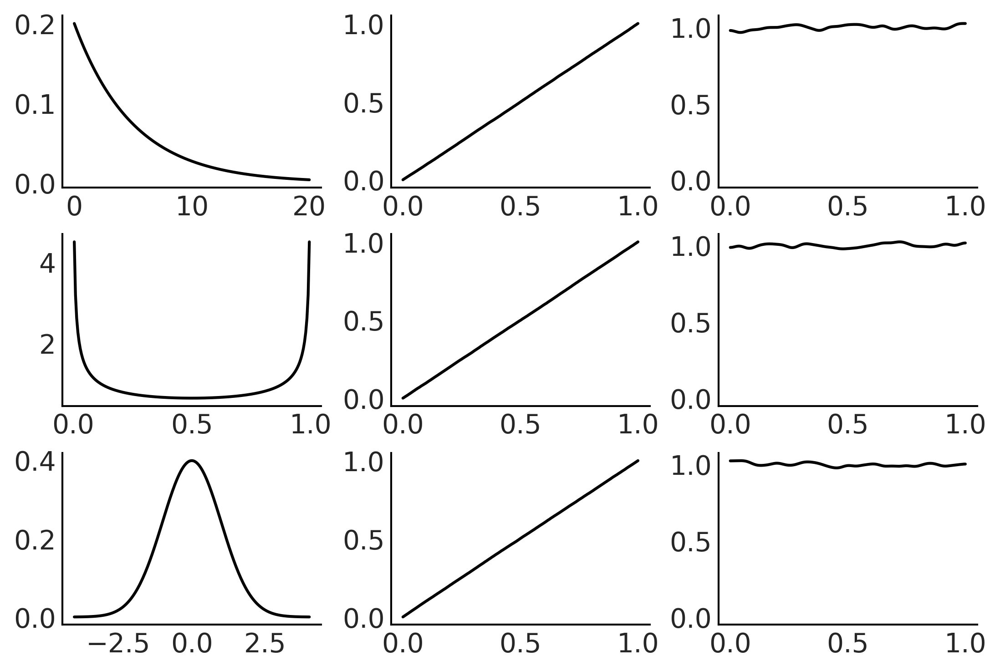
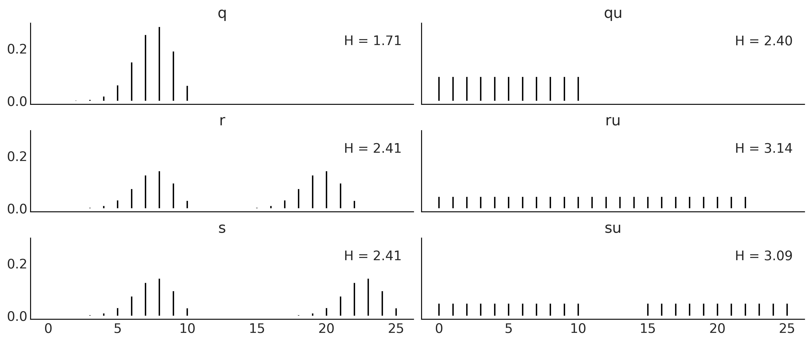
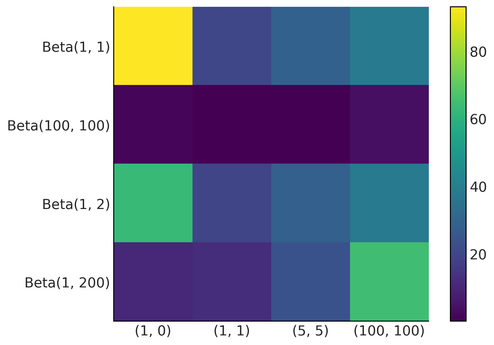
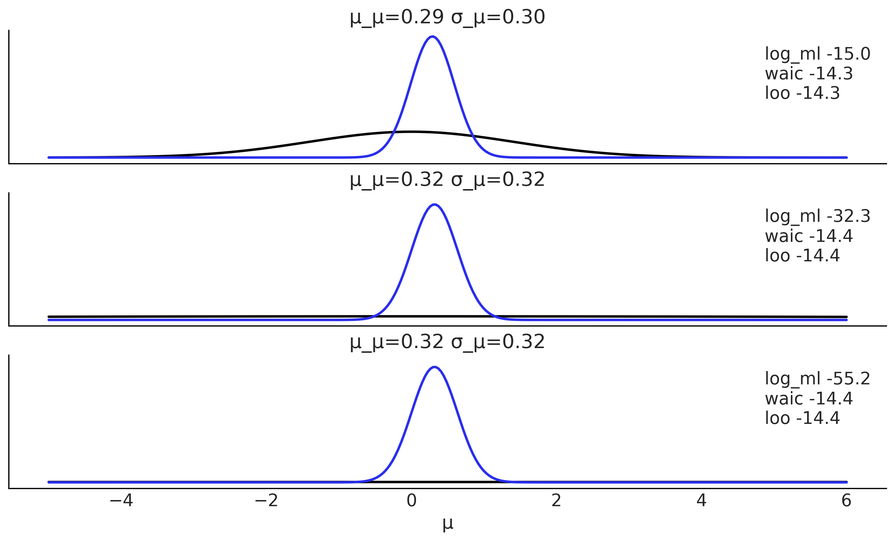
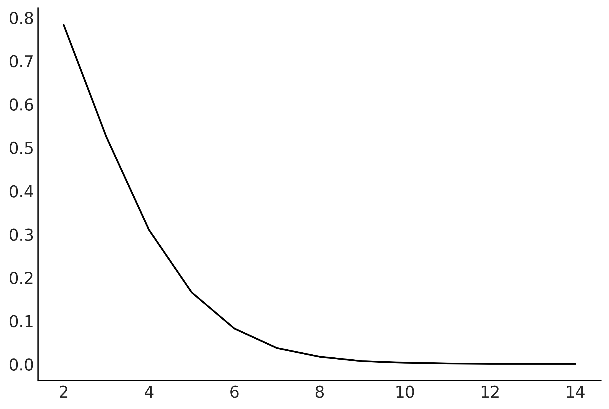
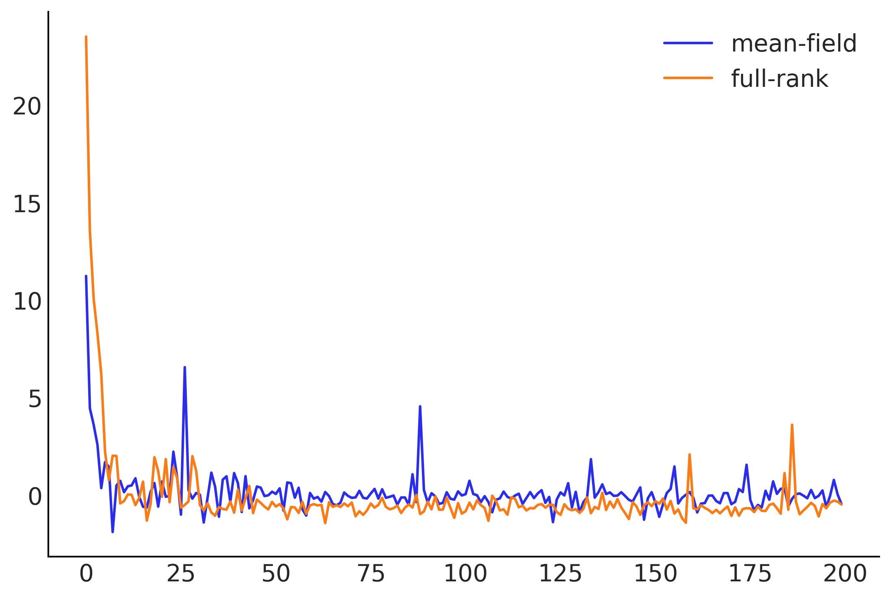
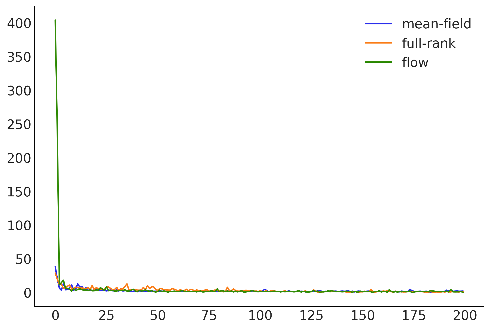

Code 11: Appendiceal Topics
Contenido
Code 11: Appendiceal Topics¶
This is a reference notebook for the book Bayesian Modeling and Computation in Python
The textbook is not needed to use or run this code, though the context and explanation is missing from this notebook.
If you’d like a copy it’s available from the CRC Press or from Amazon. ``
import arviz as az
import matplotlib.pyplot as plt
import numpy as np
import pandas as pd
import pymc3 as pm
from scipy import stats
from scipy.special import binom, betaln
az.style.use("arviz-grayscale")
plt.rcParams['figure.dpi'] = 300
np.random.seed(14067)
Probability Background¶
Code 11.1¶
def die():
outcomes = [1, 2, 3, 4, 5, 6]
return np.random.choice(outcomes)
die()
6
Code 11.2¶
def experiment(N=10):
sample = [die() for i in range(N)]
for i in range(1, 7):
print(f"{i}: {sample.count(i)/N:.2g}")
experiment()
1: 0
2: 0.1
3: 0.3
4: 0
5: 0.2
6: 0.4
a = 1
b = 6
rv = stats.randint(a, b+1)
x = np.arange(1, b+1)
x_pmf = rv.pmf(x) # evaluate the pmf at the x values
x_cdf = rv.cdf(x) # evaluate the cdf at the x values
mean, variance = rv.stats(moments="mv")
Figure 11.17¶
xs = (np.linspace(0, 20, 200), np.linspace(0, 1, 200), np.linspace(-4, 4, 200))
dists = (stats.expon(scale=5), stats.beta(0.5, 0.5), stats.norm(0, 1))
_, ax = plt.subplots(3, 3)
for idx, (dist, x) in enumerate(zip(dists, xs)):
draws = dist.rvs(100000)
data = dist.cdf(draws)
# PDF original distribution
ax[idx, 0].plot(x, dist.pdf(x))
# Empirical CDF
ax[idx, 1].plot(np.sort(data), np.linspace(0, 1, len(data)))
# Kernel Density Estimation
az.plot_kde(data, ax=ax[idx, 2])

x = range(0, 26)
q_pmf = stats.binom(10, 0.75).pmf(x)
qu_pmf = stats.randint(0, np.max(np.nonzero(q_pmf))+1).pmf(x)
r_pmf = (q_pmf + np.roll(q_pmf, 12)) / 2
ru_pmf = stats.randint(0, np.max(np.nonzero(r_pmf))+1).pmf(x)
s_pmf = (q_pmf + np.roll(q_pmf, 15)) / 2
su_pmf = (qu_pmf + np.roll(qu_pmf, 15)) / 2
_, ax = plt.subplots(3, 2, figsize=(12, 5), sharex=True, sharey=True,
constrained_layout=True)
ax = np.ravel(ax)
zipped = zip([q_pmf, qu_pmf, r_pmf, ru_pmf, s_pmf, su_pmf],
["q", "qu", "r", "ru", "s", "su"])
for idx, (dist, label) in enumerate(zipped):
ax[idx].vlines(x, 0, dist, label=f"H = {stats.entropy(dist):.2f}")
ax[idx].set_title(label)
ax[idx].legend(loc=1, handlelength=0)
plt.savefig('img/chp11/entropy.png')

Kullback-Leibler Divergence¶
Code 11.6 and Figure 11.23¶
dists = [q_pmf, qu_pmf, r_pmf, ru_pmf, s_pmf, su_pmf]
names = ["q", "qu", "r", "ru", "s", "su"]
fig, ax = plt.subplots()
KL_matrix = np.zeros((6, 6))
for i, dist_i in enumerate(dists):
for j, dist_j in enumerate(dists):
KL_matrix[i, j] = stats.entropy(dist_i, dist_j)
ax.set_xticks(np.arange(len(names)))
ax.set_yticks(np.arange(len(names)))
ax.set_xticklabels(names)
ax.set_yticklabels(names)
plt.set_cmap("viridis")
cmap = plt.cm.get_cmap()
cmap.set_bad('w', 0.3)
im = ax.imshow(KL_matrix)
fig.colorbar(im, extend="max");
plt.savefig("img/chp11/KL_heatmap.png")
/var/folders/7p/srk5qjp563l5f9mrjtp44bh800jqsw/T/ipykernel_29663/3750536694.py:16: MatplotlibDeprecationWarning: You are modifying the state of a globally registered colormap. This has been deprecated since 3.3 and in 3.6, you will not be able to modify a registered colormap in-place. To remove this warning, you can make a copy of the colormap first. cmap = mpl.cm.get_cmap("viridis").copy()
cmap.set_bad('w', 0.3)
def beta_binom(prior, y):
"""
Compute the marginal-log-likelihood for a beta-binomial model,
analytically.
prior : tuple
tuple of alpha and beta parameter for the prior (beta distribution)
y : array
array with "1" and "0" corresponding to the success and fails respectively
"""
α, β = prior
success = np.sum(y)
trials = len(y)
return np.log(binom(trials, success)) + betaln(α + success, β+trials-success) - betaln(α, β)
def beta_binom_harmonic(prior, y, s=10000):
"""
Compute the marginal-log-likelihood for a beta-binomial model,
using the harmonic mean estimator.
prior : tuple
tuple of alpha and beta parameter for the prior (beta distribution)
y : array
array with "1" and "0" corresponding to the success and fails respectively
s : int
number of samples from the posterior
"""
α, β = prior
success = np.sum(y)
trials = len(y)
posterior_samples = stats.beta(α + success, β+trials-success).rvs(s)
log_likelihood = stats.binom.logpmf(success, trials, posterior_samples)
return 1/np.mean(1/log_likelihood)
data = [np.repeat([1, 0], rep)
for rep in ((1, 0), (1, 1), (5, 5), (100, 100))]
priors = ((1, 1), (100, 100), (1, 2), (1, 200))
x_names = [repr((sum(x), len(x)-sum(x))) for x in data]
y_names = ["Beta" + repr(x) for x in priors]
fig, ax = plt.subplots()
error_matrix = np.zeros((len(priors), len(data)))
for i, prior in enumerate(priors):
for j, y in enumerate(data):
error_matrix[i, j] = 100 * \
(1 - (beta_binom_harmonic(prior, y) / beta_binom(prior, y)))
im = ax.imshow(error_matrix, cmap='viridis')
ax.set_xticks(np.arange(len(x_names)))
ax.set_yticks(np.arange(len(y_names)))
ax.set_xticklabels(x_names)
ax.set_yticklabels(y_names)
fig.colorbar(im)
plt.savefig("img/chp11/harmonic_mean_heatmap.png")

def normal_harmonic(sd_0, sd_1, y, s=10000):
post_tau = 1/sd_0**2 + 1/sd_1**2
posterior_samples = stats.norm(loc=(y/sd_1**2)/post_tau, scale=(1/post_tau)**0.5).rvs((s, len(x)))
log_likelihood = stats.norm.logpdf(loc=x, scale=sd_1, x=posterior_samples).sum(1)
return 1/np.mean(1/log_likelihood)
σ_0 = 1
σ_1 = 1
y = np.array([0])
stats.norm.logpdf(loc=0, scale=(σ_0**2+σ_1**2)**0.5, x=y).sum()
-1.2655121234846454
def posterior_ml_ic_normal(σ_0=1, σ_1=1, y=[1]):
n = len(y)
var_μ = 1/((1/σ_0**2) + (n/σ_1**2))
μ = var_μ * np.sum(y)/σ_1**2
σ_μ = var_μ**0.5
posterior = stats.norm(loc=μ, scale=σ_μ)
samples = posterior.rvs(size=(2, 1000))
log_likelihood = stats.norm(loc=samples[:, :, None], scale=σ_1).logpdf(y)
idata = az.from_dict(log_likelihood={'o': log_likelihood})
log_ml = stats.norm.logpdf(loc=0, scale=(σ_0**2+σ_1**2)**0.5, x=y).sum()
x = np.linspace(-5, 6, 300)
density = posterior.pdf(x)
return μ, σ_μ, x, density, log_ml, az.waic(idata).waic, az.loo(idata, reff=1).loo
y = np.array([ 0.65225338, -0.06122589, 0.27745188, 1.38026371, -0.72751008,
-1.10323829, 2.07122286, -0.52652711, 0.51528113, 0.71297661])
_, ax = plt.subplots(3, figsize=(10, 6), sharex=True, sharey=True,
constrained_layout=True)
for i, σ_0 in enumerate((1, 10, 100)):
μ_μ, σ_μ, x, density, log_ml, waic, loo = posterior_ml_ic_normal(σ_0, σ_1, y)
ax[i].plot(x, stats.norm(loc=0, scale=(σ_0**2+σ_1**2)**0.5).pdf(x), lw=2)
ax[i].plot(x, density, lw=2, color='C4')
ax[i].plot(0, label=f'log_ml {log_ml:.1f}\nwaic {waic:.1f}\nloo {loo:.1f}\n', alpha=0)
ax[i].set_title(f'μ_μ={μ_μ:.2f} σ_μ={σ_μ:.2f}')
ax[i].legend()
ax[2].set_yticks([])
ax[2].set_xlabel("μ")
plt.savefig("img/chp11/ml_waic_loo.png")

σ_0 = 1
σ_1 = 1
y = np.array([0])
stats.norm.logpdf(loc=0, scale=(σ_0**2 + σ_1**2)**0.5, x=y).sum()
-1.2655121234846454
N = 10000
x, y = np.random.uniform(-1, 1, size=(2, N))
inside = (x**2 + y**2) <= 1
pi = inside.sum()*4/N
error = abs((pi - np.pi) / pi) * 100
total = 100000
dims = []
prop = []
for d in range(2, 15):
x = np.random.random(size=(d, total))
inside = ((x * x).sum(axis=0) < 1).sum()
dims.append(d)
prop.append(inside / total)
plt.plot(dims, prop);

def posterior_grid(ngrid=10, α=1, β=1, heads=6, trials=9):
grid = np.linspace(0, 1, ngrid)
prior = stats.beta(α, β).pdf(grid)
likelihood = stats.binom.pmf(heads, trials, grid)
posterior = likelihood * prior
posterior /= posterior.sum()
return posterior
Variational Inference¶
See https://blog.tensorflow.org/2021/02/variational-inference-with-joint-distributions-in-tensorflow-probability.html for a more extended examples
az.style.use("arviz-colors")
import tensorflow as tf
import tensorflow_probability as tfp
tfd = tfp.distributions
# An arbitrary density function as target
target_logprob = lambda x, y: -(1.-x)**2 - 1.5*(y - x**2)**2
# Set up two different surrogate posterior distribution
event_shape = [(), ()] # theta is 2 scalar
mean_field_surrogate_posterior = tfp.experimental.vi.build_affine_surrogate_posterior(
event_shape=event_shape, operators="diag")
full_rank_surrogate_posterior = tfp.experimental.vi.build_affine_surrogate_posterior(
event_shape=event_shape, operators="tril")
# Optimization
losses = []
posterior_samples = []
for approx in [mean_field_surrogate_posterior, full_rank_surrogate_posterior]:
loss = tfp.vi.fit_surrogate_posterior(
target_logprob, approx, num_steps=200, optimizer=tf.optimizers.Adam(0.1),
sample_size=5)
losses.append(loss)
# The approx is a tfp distribution, we can sample from it after training
posterior_samples.append(approx.sample(10000))
WARNING:tensorflow:From /opt/miniconda3/envs/bmcp/lib/python3.9/site-packages/tensorflow/python/ops/linalg/linear_operator_block_diag.py:238: LinearOperator.graph_parents (from tensorflow.python.ops.linalg.linear_operator) is deprecated and will be removed in a future version.
Instructions for updating:
Do not call `graph_parents`.
plt.plot(np.asarray(losses).T)
plt.legend(['mean-field', 'full-rank']);

Figure 11.33¶
grid = np.meshgrid(np.linspace(-3, 3, 100), np.linspace(-2, 5, 100))
Z = - target_logprob(*grid)
_, axes = plt.subplots(1, 2, figsize=(10, 5), sharex=True, sharey=True)
for ax, approx, name in zip(
axes,
[mean_field_surrogate_posterior, full_rank_surrogate_posterior],
["Mean-field Approximation", "Full-rank Approximation"]):
ax.contour(*grid, Z, levels=np.arange(7))
ax.plot(*approx.sample(10000), ".", alpha=.1)
ax.set_title(name)
plt.tight_layout();
plt.savefig("img/chp11/vi_in_tfp.png")
/var/folders/7p/srk5qjp563l5f9mrjtp44bh800jqsw/T/ipykernel_13440/2635745829.py:12: UserWarning: This figure was using constrained_layout, but that is incompatible with subplots_adjust and/or tight_layout; disabling constrained_layout.
plt.tight_layout();
VI Deep dive¶
tfb = tfp.bijectors
event_shape = [(), ()]
full_rank_surrogate_posterior = tfp.experimental.vi.build_affine_surrogate_posterior(
event_shape=event_shape, operators="tril")
# mean_field_surrogate_posterior = tfp.experimental.vi.build_affine_surrogate_posterior(
# event_shape=event_shape, operators="diag")
mean_field_surrogate_posterior = tfd.JointDistributionSequential([
tfd.Normal(tf.Variable(0.), tfp.util.TransformedVariable(1., bijector=tfb.Exp())),
tfd.Normal(tf.Variable(0.), tfp.util.TransformedVariable(1., bijector=tfb.Exp())),
])
# Density estimation with MADE.
made = tfb.AutoregressiveNetwork(params=2, hidden_units=[10, 10])
flow_surrogate_posterior = tfd.TransformedDistribution(
distribution=tfd.Sample(tfd.Normal(loc=0., scale=1.), sample_shape=[2]),
bijector=tfb.Chain([
tfb.JointMap([tfb.Reshape([]), tfb.Reshape([])]),
tfb.Split([1, 1]),
tfb.MaskedAutoregressiveFlow(made)
]))
# Create a Masked Autoregressive Flow bijector.
# prior = tfd.JointDistributionSequential([tfd.Normal(0., 1.), tfd.Normal(0., 1.)])
# maf = tfb.MaskedAutoregressiveFlow(shift_and_log_scale_fn=net)
# flow_surrogate_posterior = tfp.experimental.vi.build_split_flow_surrogate_posterior(
# event_shape=prior.event_shape_tensor(), trainable_bijector=maf)
# Optimization
losses = []
posterior_samples = []
for approx in [mean_field_surrogate_posterior, full_rank_surrogate_posterior, flow_surrogate_posterior]:
loss = tfp.vi.fit_surrogate_posterior(
target_logprob, approx, num_steps=200, optimizer=tf.optimizers.Adam(0.1),
sample_size=5)
losses.append(loss)
# The approx is a tfp distribution, we can sample from it after training
posterior_samples.append(approx.sample(10000))
plt.plot(np.asarray(losses).T)
plt.legend(['mean-field', 'full-rank', 'flow']);

grid = np.meshgrid(np.linspace(-3, 3, 100), np.linspace(-2, 5, 100))
Z = - target_logprob(*grid)
_, axes = plt.subplots(1, 3, figsize=(15, 5), sharex=True, sharey=True)
for ax, approx, name in zip(
axes,
[mean_field_surrogate_posterior, full_rank_surrogate_posterior, flow_surrogate_posterior],
["Mean-field Approximation", "Full-rank Approximation", "Flow Approximation"]):
ax.contour(*grid, Z, levels=np.arange(7))
ax.plot(*approx.sample(10000), ".", alpha=.1)
ax.set_title(name)
plt.tight_layout();
/var/folders/7p/srk5qjp563l5f9mrjtp44bh800jqsw/T/ipykernel_13440/1954138361.py:12: UserWarning: This figure was using constrained_layout, but that is incompatible with subplots_adjust and/or tight_layout; disabling constrained_layout.
plt.tight_layout();